Many fellow data scientists ask me what political psychology is. I usually answer briefly by saying it is an interdisciplinary field studying political attitudes and behavior, mainly with the research methods of psychology. But of course, political psychology is more than that. Two broad questions can explain political psychology much better than a concise definition.
The latter question’s answer is for another blog post. Here I outline a broad answer to the former question with a coauthor network analysis of political psychologists.
Coauthorship and citation analysis with networks provide fruitful insights into research and collaboration patterns in scientific communities. That is what Quayle et al. (2020) had already done for the International Society of Political Psychology. They did this from a specific perspective1. I borrow their idea and build upon it by expanding the coauthor network size.
Below is the coauthor network of 6259 scholars who published political psychology work. The network has 8943 edges. In plain English, it is a network of 6259 individuals, and there is a tie between two individuals if they publish an academic piece together.
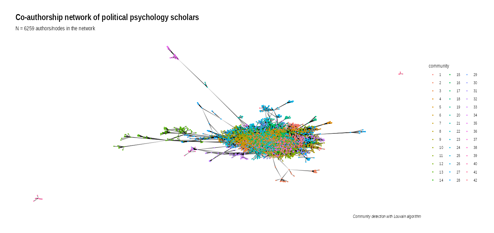
The Louvain community detection algorithm estimates 42 sub-groups, meaning individuals within these communities are more tightly connected to one another compared to the rest of the broader network. And here are the sizes of these communities.
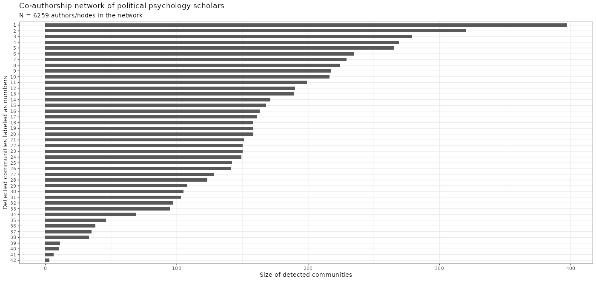
Judging by the following centrality measures (think of them as the descriptive statistics of a network), I find seven communities noteworthy due to their degree (how many ties a scholar has) and betweenness (a scholar being in a hub- or bridge-like position in the network connecting multiple subunits).
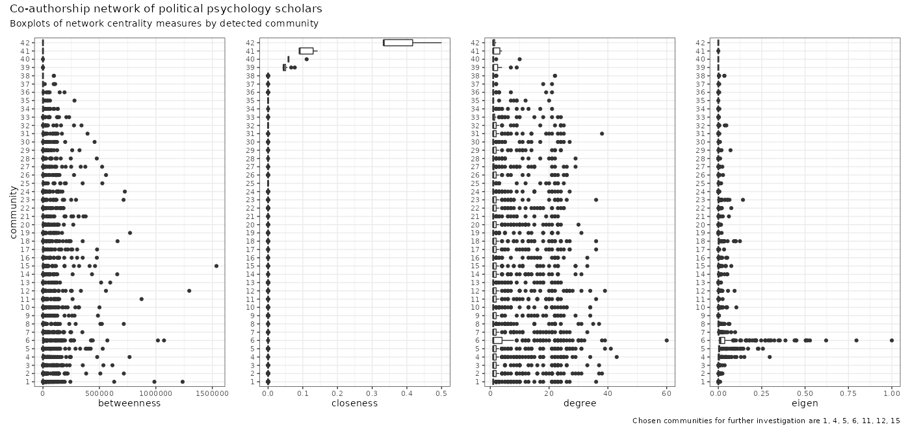
I choose communities 4, 5, and 6 because they have quite a few obvious outliers for degree – community 6 also entails interesting extreme outliers in betweenness. Communities 1, 11, 12, and 15 are the extremes of betweenness outliers.
Below is a functionally useless snapshot of the selected communities.
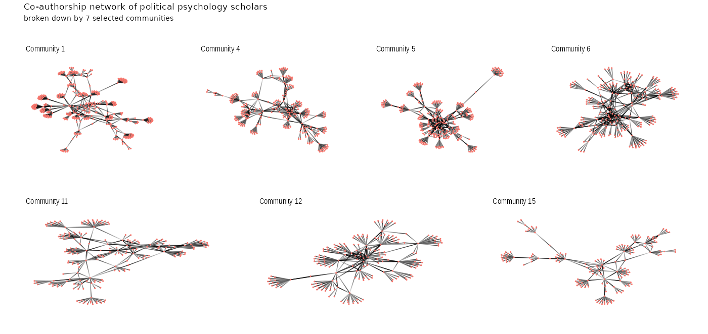
I only bothered to collect attributes (characteristics of individuals/scholars) on the top 25 nodes with the highest degrees. So we are looking at the sliced-out communities of the broad network with 175 scholars out of the total 6259. The only attributes I included are the country of the university the scholar is affiliated with, the principal field/discipline of the scholar, whether the scholar is male/female, and professor/nonprofessor.
Let’s start with Community 1’s top-25, which looks like a transdisciplinary group of scholars mostly located in US & Canada.
All scholars in this community are professors; most are male.
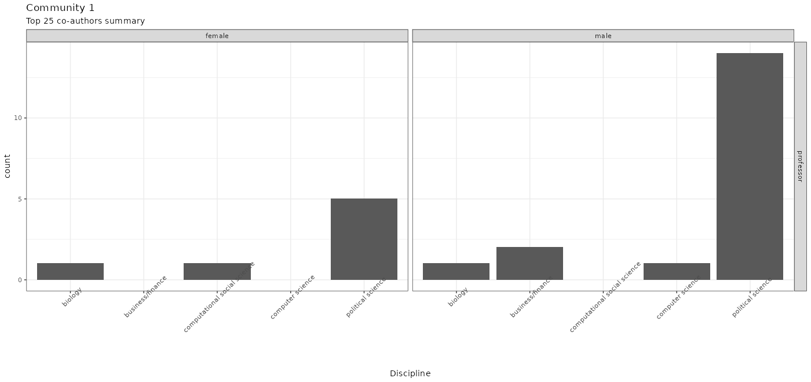
The top-25 of Community 4 looks comparatively international to me – kudos! Good for you, good for political psychology in general!
Again, comparatively speaking, this community is doing pretty well in terms of gender and professor/nonprofessor balance. Well done once again! Turns out this community is all psychologists.
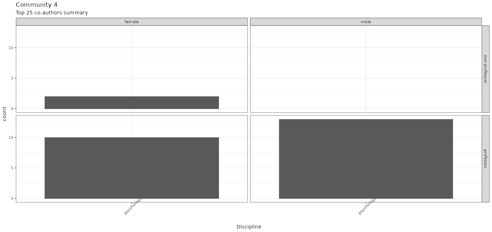
Scholars in Australia dominate the top-25 of Community 5, and again many are psychologists.
Here is Community 5’s top-25 with their other attributes.
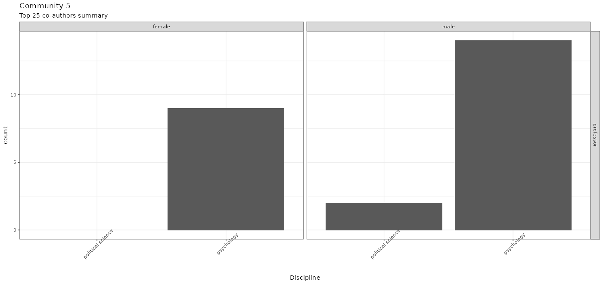
Moving on to Community 6’s top-25, who are the close neighbors of Community 5.
So, for the top-25 of Community 6, we are looking at mostly male psychology professors.
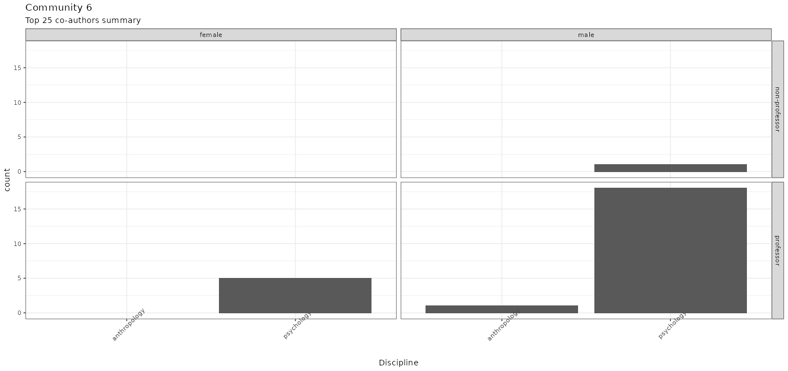
The top-25 scholars of Community 11 are a group of comparative politics scholars, predominantly located in Germany.
The ratio of professor/nonprofessor male/female is again discouraging, but hey, at least there are multiple disciplines.
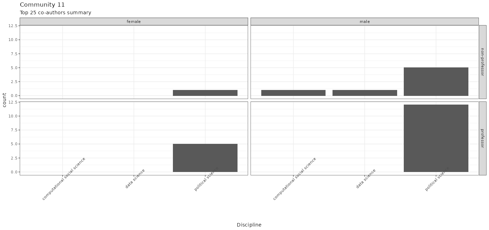
Community 12’s top-25 scholars are the second transdisciplinary group; many works at American universities.
Here is the breakdown of the disciplines and gender and professional rank ratio for Community 12’s top-25.
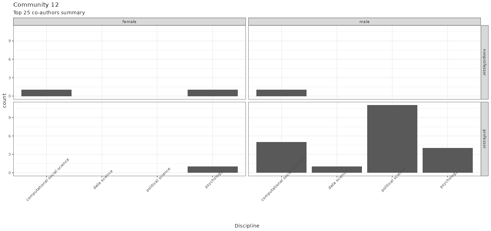
Below is the final subgroup – the top-25 scholars of Community 15 – a psychologist-dominant group mostly working in US universities.
And here is the final plot for the node attributes of Community 15’s top-25.
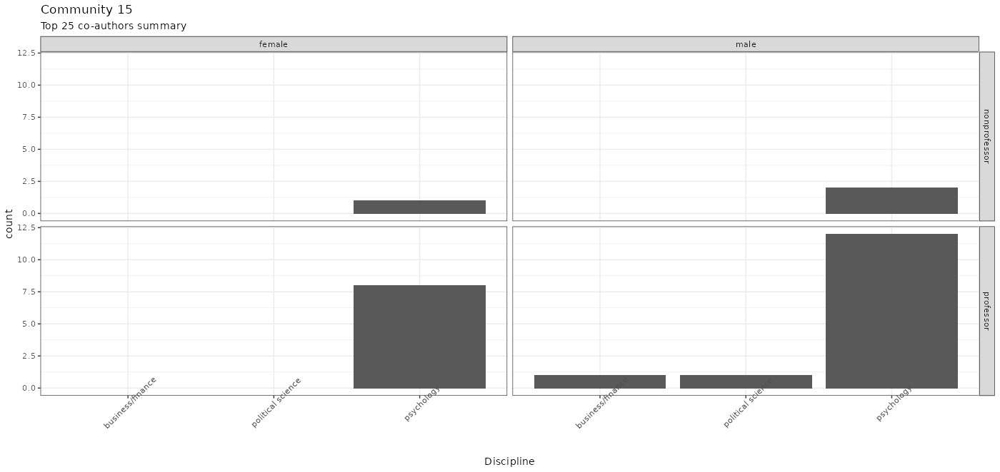
Now, I must admit, it is a bit disheartening to replicate the main findings of Quayle et al. (2020) with a different and larger sample. But, hey, on the one hand, it is what it is, and you can’t argue with the facts. On the other hand, I found Community 4; the top-25 scholars there with the highest degrees don’t look super WEIRD to me instantly.
Before elaborating on what explains the network structure, let’s first digest the extremity the centrality measures reveal. 72 % of the scholars in the network have only one tie (connected to one other scholar); 10 % of the scholars have two ties, and this 82% contributes to the median of 1 tie. Let’s read it from a different perspective: 1091/6259 scholars have 3 or more ties, and they are all outliers. One scholar is connected to 60 coauthors, one to 43, one 41; three to 39, another to 38, another to 37…
Well, of course, these kinds of extremities are the norm in social networks, no jaw-dropper. What then explains the network structure? That is a question we can answer with exponential random graph models.
I tried a bunch of models with arbitrarily formulated hypotheses. Below are the MCMC diagnostics of network structure explained by
All MCMC diagnostics except edges + node degrees 3 model suck. And I don’t necessarily dig the edges’ MCMCs on the edges + node degrees 3 model, but that may also improve with more iterations.
MCMC Diagnostics
MCMC Diagnostics
Finally, here are the goodness of fit plots of two models with 2 and 3 degrees, just as a gratuitous benchmark.
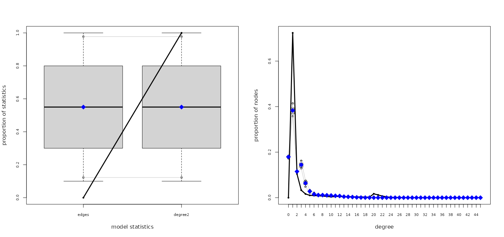 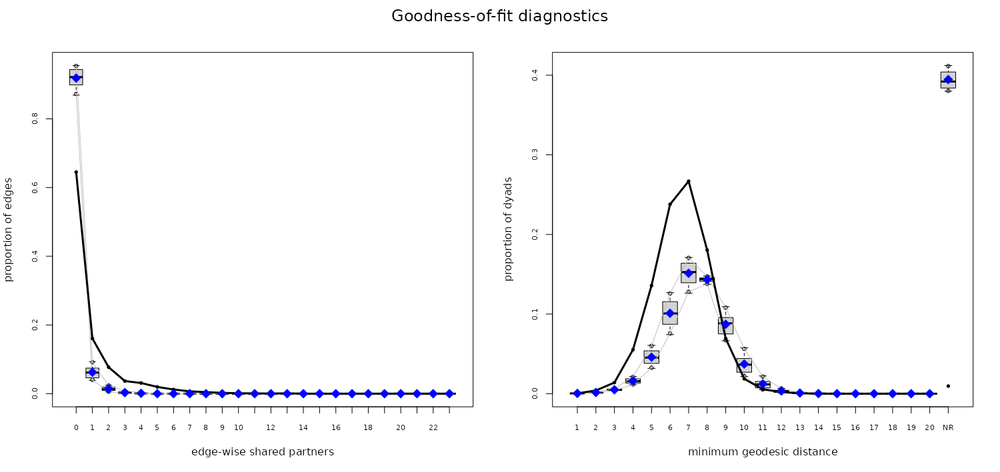
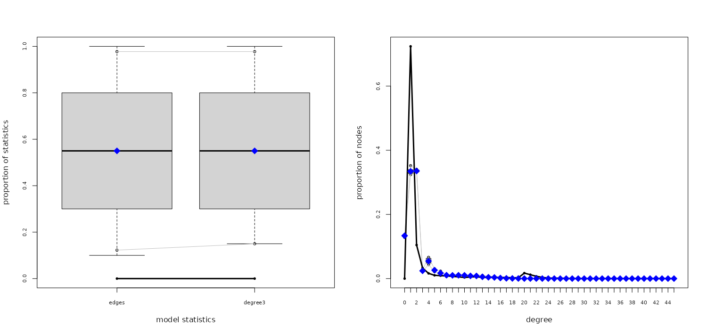 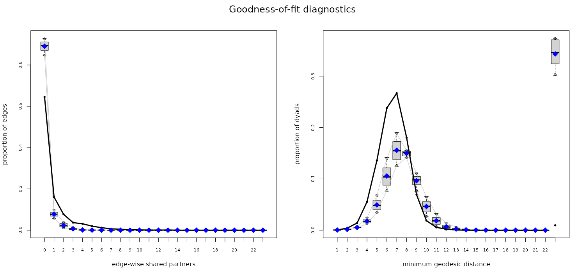
I am not noting any takeaways from these findings. I’m sure you’ll have your own takeaway if you are an academic working in the broad field of political psychology. What I’d say is, though, node attributes on every scholar in the network (not only the top-25 of selected communities) would make the analyses more informative. This additional data collection process is a bit trickier and time-consuming and is not worth the effort of a blog post.
That being said, this should give some interested fellow data scientists an impression of who political psychologists are. What they study? That’s a question for another blog post, which you can read here.
Quayle, M., Pautz, N. and Mhlongo, B. (2020), A Coauthorship Analysis
of Internationalization in Political Psychology Through the Lens of ISPP
Dissemination Activities. Political Psychology, 41: 901-921. https://doi.org/10.1111/pops.12656
They find that 30 years of ISPP publications predominantly originate from WEIRD (Western, Educated, Industrialized, Rich, and Democratic) countries. There are signs of non–WEIRDness in annual meeting papers, however deep internationalization is still far away.↩︎